Таблица коллекции |  Навигация по канону |  Связные экранизации |
Таблица коллекции | Навигация по канону | Связные экранизации |


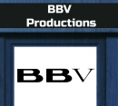


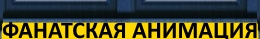
Аудиодрама с 4 Доктором и Сарой Джейн в двух частях июл. 1976 (BBC (Argo Records)) 2024 ("Animatronics87 / Kerrie Rose") Вторая часть и 10 минутная версия первой в плейлисте: https://vk.cc/cXRIGF | 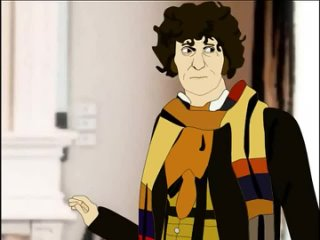 БЕЗ ПЕРЕВОДА |
Вышла в рамках научно образовательной передачи. Одна из самых первых аудиопьес по сериалу. 4 октября 1976 (BBC Radio) 7 мая 2012 (Adam Bullock) | 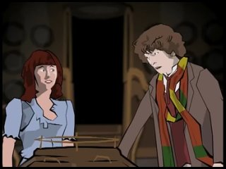 БЕЗ ПЕРЕВОДА |
Фанатская анимация для первых двух эпизодов (из шести) «Slipback» 25 июля 1985 (BBC Radio) 1 ноября 2014 (ScatmanJon) | 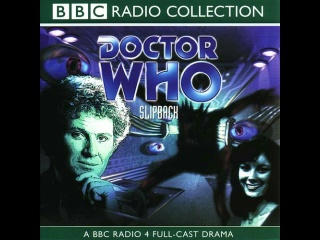 БЕЗ ПЕРЕВОДА |
Спецвыпуск, который должен был выйти в 1993 году 1993 (BBC) 2014 (Ian Levine) | 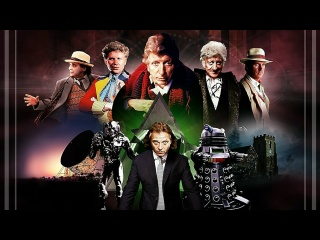 VO [Персанов] + Original [ENG] + SUB |
Входит в серию «The Seventh Doctor Adventures», но изначально прилагалась бесплатно к 300‑му номеру журнала Doctor Who Magazine 11 января 2001 (Big Finish) 26 июля 2017 (Doctor Who Animated) | 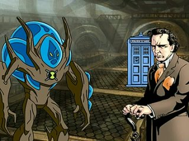 БЕЗ ПЕРЕВОДА |
Аудиодрама Big Finish с 7-м Доктором. Это первая серия из четырёх. май 2009 (Big Finish) 22 апреля 2010 (Animatronics87) Полная аудиоистория тут: https://t.me/+DNtTCibRQulmMmRi | 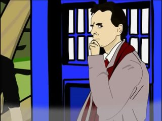 БЕЗ ПЕРЕВОДА |
4-я и последняя аудиопьеса аудиосериала «Приключения Шестого Доктора» 17 августа 2015 (Big Finish) 27 апреля 2024 (Josh Snares) Аудиоистории в оригинале первых трех эпизодов и альтернативными сценами регенерации в плейлисте: https://vk.cc/cXP30N | 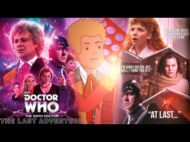 MVO [Huracan Team] + Original [ENG] |
Седьмая история в серии ежемесячных приключений Big Finish. Считается началом арки «Dalek Empire», но не входит в нумерацию Dalek Empire I–IV апр. 2020 (Big Finish) 22 сентября 2023 (Josh Snares) Имеются короткие анимации отдельных сцен. Ищите в плейлисте: https://vk.cc/cXQlbN | 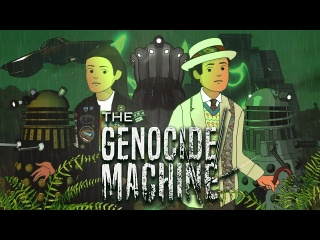 БЕЗ ПЕРЕВОДА |
Первая (из трёх) история из цикла «Вне времени» 26 августа 2020 (Big Finish) 9 апреля 2022 (Josh Snares) | 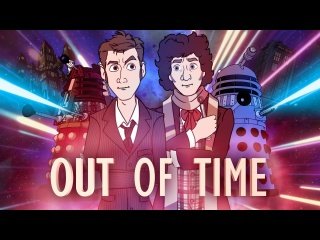 VO [Персанов] + Original [ENG] + SUB |